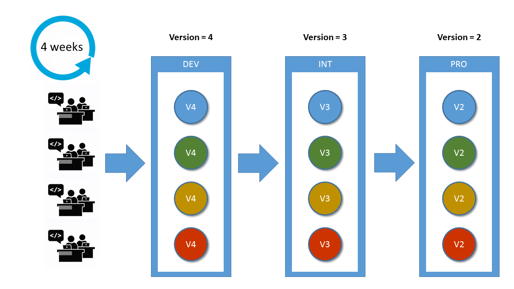
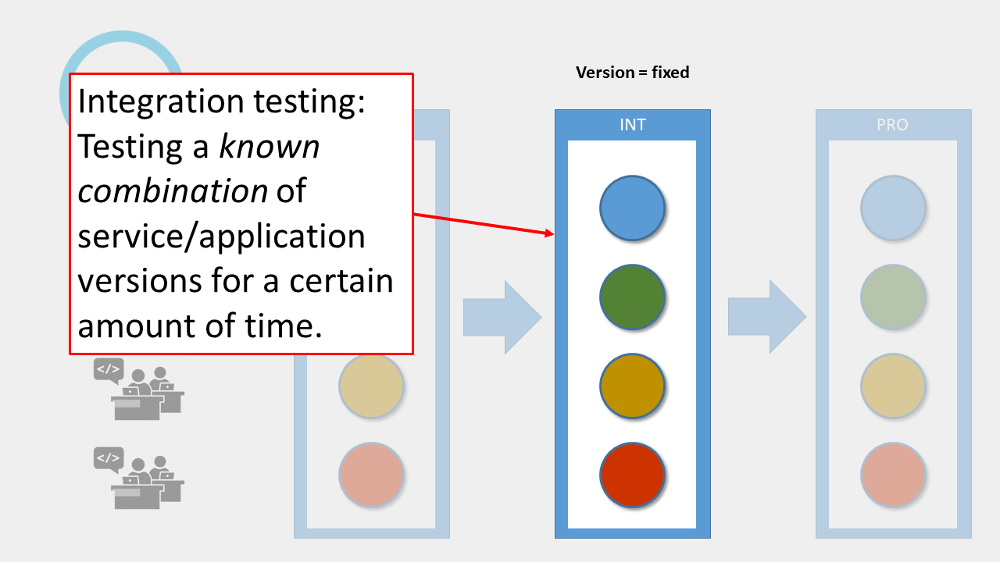
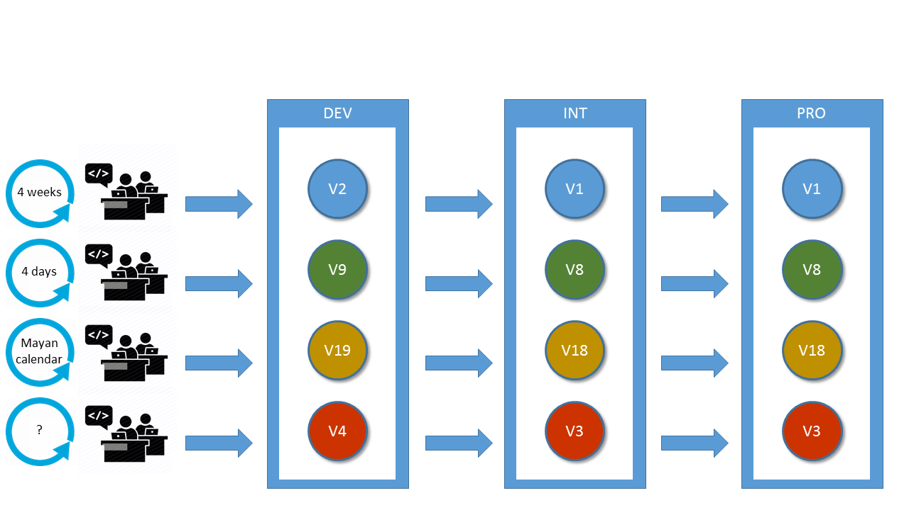
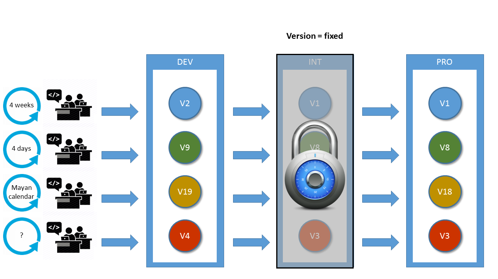
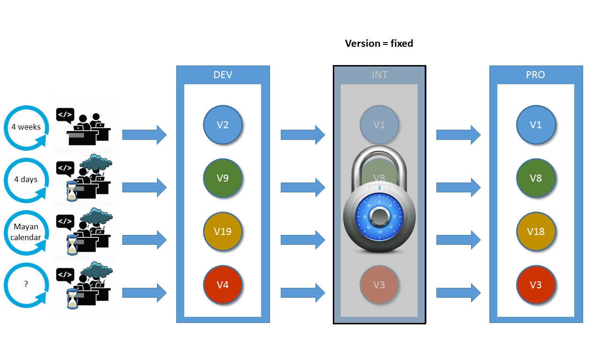
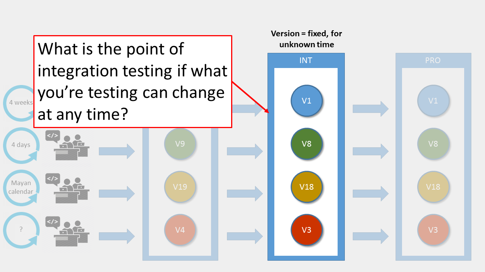
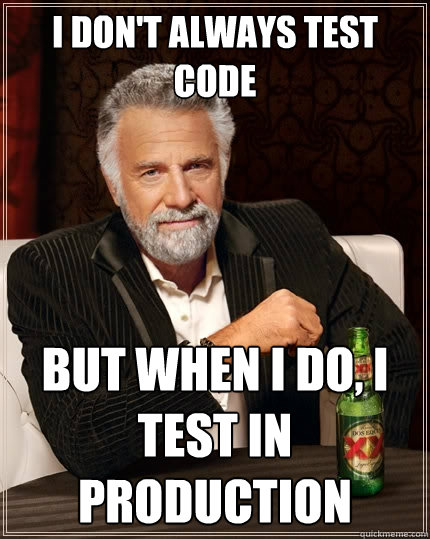

bol.com context
scrum teams, 5-8 people
130 services & apps (SOA, the good kind)
2 week sprints
Problems we had @ bol.com
central, shared test environment
>1 teams in single codebase (unstable
master)giant release every 4 weeks
Development process unsuited to continuous delivery
The solution: Mayfly
user story-centric
continuous delivery
development platform
using Docker
User story flow
User story
has a short-lived feature branch
has its own continuous integration
can be accepted independently
done == (ready for) production
Mayfly
Provides each user story with:
feature branch
continuous integration
production-like environment
Definition-of-Done check
Everything-as-code
build pipelines as code
environments as code
Definition-of-Done as code
tests as code
All code is stored in the app repo
Flow of a story
Start working on a story
Jira → "In progress"
Create branch
Create build pipeline
Create environment (Mesos + Marathon)
Deploy copy of
masterDocker image
Make a change (repeat)
Build pipeline builds change as Docker image
New image is deployed on user story environment
DoD checks are updated
Resolve story
Jira → "Done" (if DoD passes!)
Feature branch is merged to
master(never any conflicts)Environment is cleaned up
Last user story Docker image is deployed to production
master == production
But I need an integration testing environment!
No, you don’t
Old style development
Old style development

Old style development
Integration testing

Continuous delivery

Integration test time!

"….. <sigh>"

Get rid of the version lock

No integration environment?!

Current state
early development
scope limited to simple services
usage
5 Mayfly services
(eating our own dogfood)12 services of other teams
Future
DB support; Oracle, MongoDB, …
add more services
working towards production ready